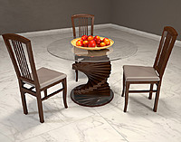
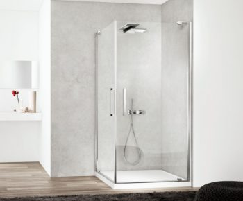
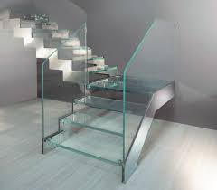
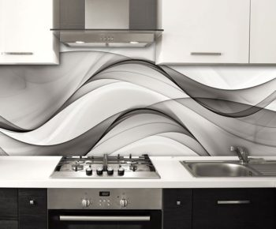
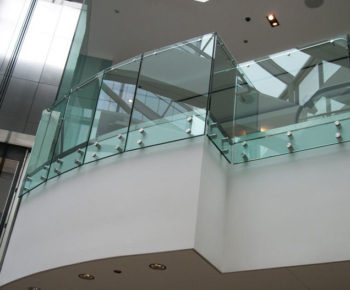
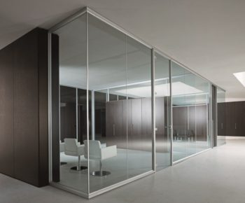
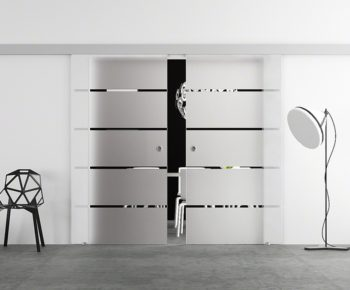
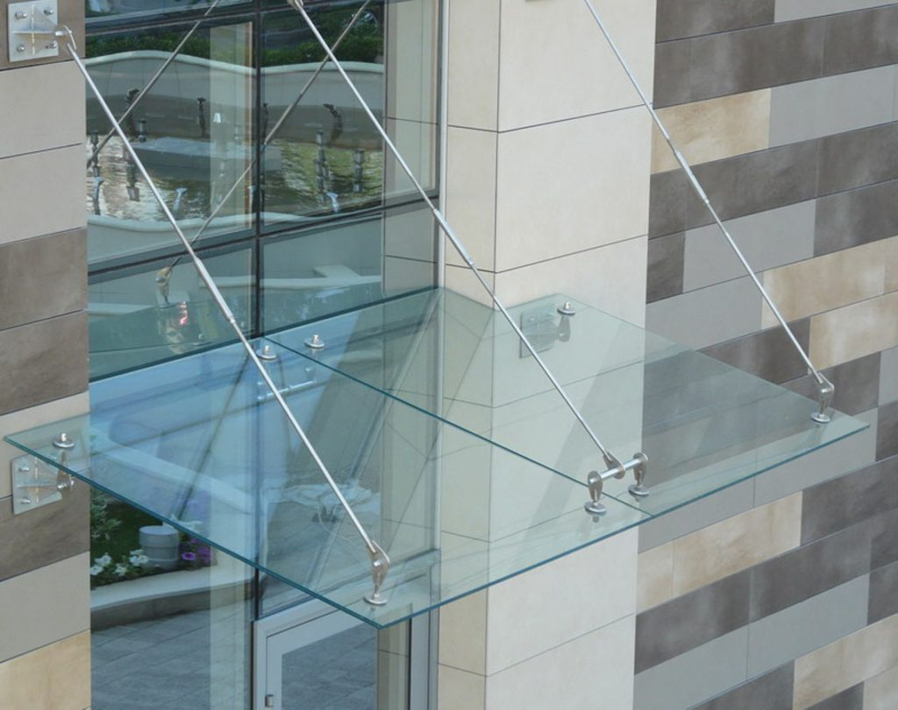

Сегодня каждый хочет оформить свой интерьер по последним модным тенденциям. Одним из самых выдающихся материалов является стекло, которое несомненно привлечет внимание и украсит помещение изысканным дизайнерским решением. Изделия из стекла способны наполнить помещение светом и комфортом, расширить и облагородить его. Это уникальная возможность придать окружающему пространству оригинальный и неповторимый облик. Тенденции применения стекла в интерьере постоянно набирают обороты, появляются новые смелые решения и вариации. Они могут отличаться толщиной, цветовыми решениями, степенью прозрачности и тем самым значительно расширяют сферу использования. Стекло элегантно обустроит помещение, а эксклюзивная стеклянная мебель наполнит дом великолепием и индивидуальностью.

Изготавливаем столешницы из стекла на заказ любого размера и формы, начиная от тонких столешниц на столы, стойки, и заканчивая столешницами из толстого закалённого стекла для кухни, стендов, стоик ресепшн.

Стеклянные душевые: кабины, ограждения, двери, перегородки, шторки изготавливаемые на нашем производстве являются эксклюзивной продукцией которая изготавливается только на заказ и только для вас.

Изготавливает стеклянные ступени любого размера и формы из закалённого триплекса.

Для придания вашему интерьеру мощного акцента , мы предлагаем использовать стеклянные панно и скинали, которые станут отличным решением при оформлении любого помещения.

Стеклянные элементы – изящное и легкое решение для любого интерьера. Сегодня стеклянные ограждения становятся элегантным дополнением к балконам и террасам.

Стеклянные перегородки могут быть : матовое и прозрачное стекло, тонированное в массе, наличие фотопечати и гравировки. Такая перегородка найдет свое место в любом интерьере и будет выглядеть стильно и оригинально.

Стеклянные двери стали не только способом зонирования помещения, но и элементом декора. Этот дизайнерский вариант способен визуально увеличить пространство и рассеять световой поток по всему помещению.

Стеклянные козырьки, в отличие от массивных навесов, пропускают свет и расширяют пространство для обзора. Это изящное дизайнерское решение придаст экстерьеру легкость и воздушность.
Зеркало – необыкновенный предмет с многовековой историей. Оно прочно заняло свое место в интерьере. В небольших квартирах зеркало служит инструментом увеличения пространства, в прихожей и ванной комнате – это неотъемлемый функциональный элемент.

В каталоге для фотопечати огромный выбор различных изображений на разную тематику, даже самый требовательный заказчик сможет найти для себя необходимое изображение для фотопечати.
Хотим предложить Вашему вниманию некоторые стандартные изделия, часто заказываемые в нашей компании: стеклянные двери, балконы, лестничные перегородки, кухонные столешницы и столешницы в ванную комнату, душевые кабины и перегородки из стекла станут неотъемлемым элементом ванной комнаты. Интерьер всего дома отлично дополнят зеркала, выполненные в различных дизайнерских решениях. Стеклянная мебель удобна в уходе, отлично пропускает свет и визуально расширяет помещение. Стекло является экологически чистым материалом, который прекрасно сочетается с другими интерьерными элементами. Гармоничность и разнообразие оформления позволяют сделать выбор в пользу этого неповторимого украшения интерьера.